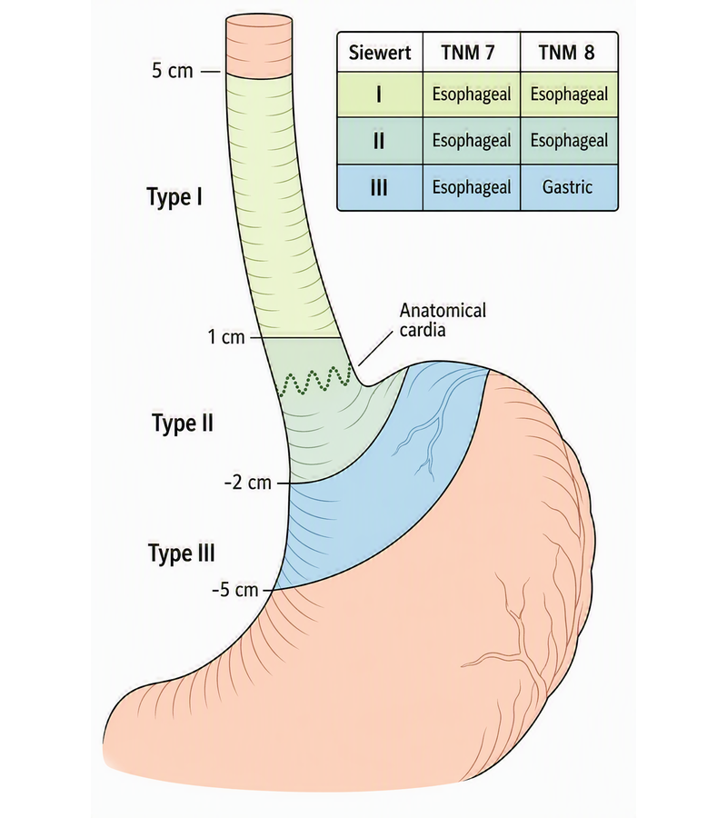
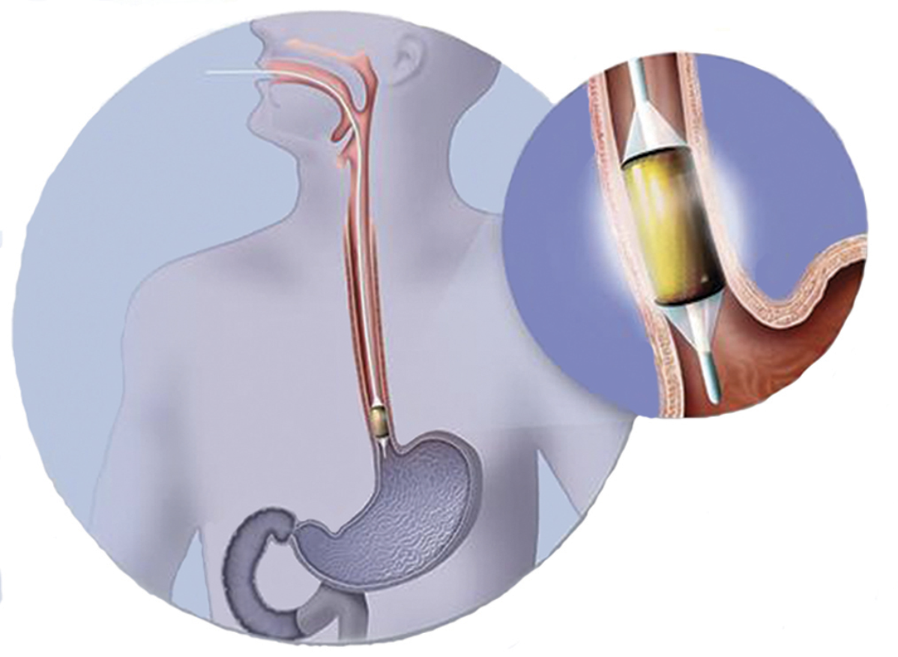
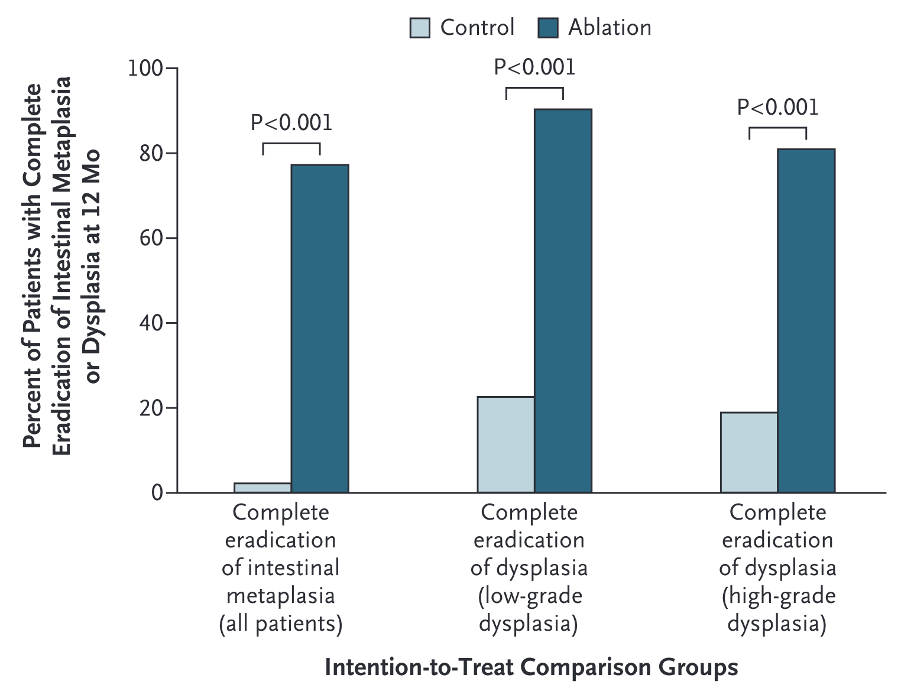
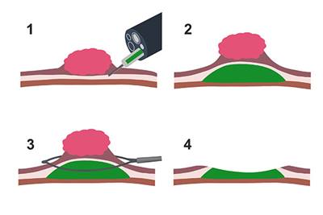

Gastric Cancer
Epidemiology
- 5th leading cause of cancer death globally
- ~968,350 new cases and ~659,853 deaths worldwide (2022)
- ~30,300 new cases and ~10,780 deaths in the US (2025)
Global Epidemiology
- Incidence hotspots: East Asia, Eastern Europe, South America
- Incidence 2× higher in males than females
- Median age at diagnosis: 68 years
- Globally, 85% of cases in stomach body or antrum; 15% in the cardia
- In North America/Western Europe, cardia/GEJ tumors are 30%–40% of cases
- Overall incidence declining over the past century
- improved food preservation
- declining H. pylori prevalence
Risk Factors - Infectious
- Helicobacter pylori:
- WHO Class I carcinogen; attributable risk of 75–90% for noncardia gastric cancer.
- Only ~3% of infected individuals develop cancer.
- Key virulence factors: CagA (oncoprotein) and VacA (vacuolating cytotoxin).
Epstein-Barr virus (EBV): associated with ~7.5% of gastric cancers.
Risk Factors - Environmental/Lifestyle
High salt intake, smoked/preserved foods (OR ~2.1) [5]
Smoking (OR ~1.25), heavy alcohol use (OR ~1.37) [1]
Obesity (OR ~1.7) — particularly for cardia/GEJ cancers [5]
Risk Factors - Medical Conditions
Pernicious anemia / autoimmune atrophic gastritis [3]
Prior partial gastrectomy (gastric stump cancer)
Gastric adenomatous polyps [6]
Ménétrier disease (giant hypertrophic gastritis)
Risk Factors - Genetic/Hereditary
CDH1 mutations → Hereditary Diffuse Gastric Cancer (HDGC)
autosomal dominant; 37–42% lifetime risk in males, 25–33% in females.
CDH1 encodes E-cadherin, a cell adhesion protein.
Also associated with lobular breast cancer (37–55% lifetime risk in females).1
Lynch syndrome (mismatch repair gene mutations) — gastric cancer in up to 10% of families
FAP (APC mutations) — increased risk of gastric adenomas and cancer
BRCA1/BRCA2 germline variants — emerging evidence of increased gastric cancer risk
Protective Factors
H. pylori eradication (46% reduction in gastric cancer incidence) 1
Diets high in fruits and vegetables
Aspirin/NSAID use (some evidence)
Histologic Types
| Feataures | Intestinal Type (~50%) | Diffuse Type (~30%) |
|---|---|---|
| Histology | Glandular/papillary well-differentiated |
Poorly cohesive, dedifferentiated, signet ring cells |
| Precursor | Follows Correa cascade | Does NOT require chronic inflammation |
| H Pylori Association | Strong | Present |
| Location | Antrum, body | Any location (or entire stomach) |
| Gross appearance | Polypoid, fungating | Linitis plastica (“leather bottle”) |
| Spread | Hematogenous (Liver) | Peritoneal (Krukenburg tumors, carcinomatosis) |
| Key mutation | P53 | CDH1 (E-cadherin loss) |
Mixed tumors in 20%
Signet ring cell histology portends resistance to systemic therapy and poor prognosis
Adenocarcinoma GE Junction - Siewert Classification
Type I: Distal esophagus
- (1–5 cm above GEJ)
Type II: True cardia
- (1 cm above to 2 cm below GEJ)
Type III: Subcardial
- (2–5 cm below GEJ)

Molecular Genetics
Subtype Frequency Key Features Clinical Relevance Chromosomal Instability (CIN) ~50% TP53 mutations, aneuploidy, RTK amplifications (HER2, EGFR, FGFR2) Most common; responds to cisplatin-based chemo; HER2-targeted therapy Microsatellite Instability (MSI) ~20% High mutation burden, MLH1 hypermethylation, dense lymphocyte infiltration Better prognosis; responds to immune checkpoint inhibitors EBV-positive ~9% PIK3CA mutations, PD-L1/PD-L2 amplification, extreme DNA hypermethylation High immunogenicity; responds to immunotherapy Genomically Stable (GS) ~20% CDH1/RHOA mutations, CLDN18-ARHGAP fusions, diffuse histology Worst prognosis; target for CLDN18.2-directed therapy
Gastric Cancer Treatment Categories
| Category | AJCC | Stage | Treatment |
|---|---|---|---|
| Superficial Tumors | I | T1a | Endoscopic Therapy |
| Localized Tumors | IIB | T1b T2 | Surgery |
| Locally-advanced | III IIA |
T3 or N+ | Chemo → Surgery→ Chemo |
| Metastatic | IVB | M1 | Chemotherapy \(\pm\)Radiation |
Superficial Gastric Cancer
127 patients with dysplasia randomized:
- Radio-frequency ablation
- Sham ablation
Low-grade dysplasia in 64
High-grade dysplasia in 63


Radiofrequency Ablation for Dysplasia
Radiofrequency Ablation results in eradication of Barrett’s in 75% at 1 year

No role for primary surgery in high-grade dysplasia
Superficial Tumors (T1)
Workup of nodular Barretts:
- Endoscopic Ultrasound
- Endoscopic Mucosal Resection
- Diagnostic (T staging)
- May be therapeutic for T1a tumors
Endoscopic Musocal Resection for T1 Tumors

Endoscopic Submucosal Dissection for T1a/T1b
Endoscopic resection uses needle-knife to dissect below submucosa
Maybe suitable for T1b lesions if lesion is completely resected
Risk of perforation
Localized Tumors (T2 N0)
SLIDE 2: Learning Objectives
By the end of this presentation, students should be able to:
- Describe the epidemiology and key risk factors for gastric cancer
- Explain the Correa cascade and pathogenesis of gastric cancer
- Differentiate histologic (Laurén) and molecular (TCGA) classification systems
- Recognize the clinical presentation and diagnostic workup
- Understand the TNM staging system and its prognostic implications
- Outline stage-appropriate treatment strategies including surgery, chemotherapy, immunotherapy, and targeted therapy
- Identify key biomarkers that guide treatment decisions
| ## Intestinal-type gastric carcinogenesis: Corea Cascase |
| Normal mucosa → Chronic gastritis (H. pylori) → Atrophic gastritis → Intestinal metaplasia → Dysplasia → Adenocarcinoma |
| Each step involves accumulating genetic and epigenetic changes (chromosomal instability, DNA methylation). [3][11] |
| Gastric intestinal metaplasia (GIM) is a key precancerous lesion; 10-year cumulative risk of progression to cancer is ~1.6% overall, but 2–4.5× higher in high-risk GIM. [11] |
| H. pylori eradication can reduce cancer risk but has limited effect on reversing established intestinal metaplasia. [12] |
| ## SLIDE 8: Molecular Classification — TCGA Subtypes |
| SubtypeFrequencyKey FeaturesClinical RelevanceChromosomal Instability (CIN)~50%TP53 mutations, aneuploidy, RTK amplifications (ERBB2, EGFR, FGFR2)80% of GEJ/cardia tumors; HER2-targeted therapyMicrosatellite Instability (MSI)~20%High mutation burden, dMMR, dense lymphocyte infiltrationBest response to immune checkpoint inhibitorsEBV-positive~9%PIK3CA mutations, PD-L1/PD-L2 overexpression, CDKN2A methylationHigh immunogenicity; responds to immunotherapyGenomically Stable (GS)~20%CDH1/RHOA mutations, diffuse histology, EMT featuresWorst prognosis; limited targeted options |
| - MSI and EBV-positive subtypes are associated with better responses to immune checkpoint inhibitors - CIN subtype enriched for targetable amplifications (HER2, FGFR2) |
SLIDE 9: Clinical Presentation
Most patients are symptomatic at diagnosis (>90% in the US)
Common symptoms:
- Weight loss (62%)
- Abdominal/epigastric pain (52%)
- Nausea (34%)
- Anorexia/early satiety (32%)
- Dysphagia (26%) — especially proximal/GEJ tumors
- Iron deficiency anemia (40% in one series)
Late/advanced findings:
- Virchow node (left supraclavicular lymphadenopathy)
- Sister Mary Joseph nodule (periumbilical nodule)
- Krukenberg tumor (ovarian metastasis)
- Blumer shelf (peritoneal drop metastasis on rectal exam)
- Ascites (peritoneal carcinomatosis)
Key point: Early gastric cancer is usually asymptomatic — this is why screening is effective in high-incidence countries
SLIDE 10: Screening
High-incidence countries (Japan, South Korea):
- Population-based endoscopic screening every 2 years
- South Korea: age ≥40 years
- Japan: age ≥50 years
- South Korea: screening participation increased from 39.4% (2005) to 77.5% (2023)
- Localized-stage detection increased from 51.7% to 69.8%
- 5-year relative survival improved from 58% to 78.4%
- Japanese cohort study: 61% reduction in gastric cancer mortality with endoscopic screening (HR 0.39)
United States:
- No routine screening for general population (low incidence)
- AGA (2025): screening endoscopy recommended for high-risk populations (foreign-born individuals from moderate- to high-incidence regions)
- Endoscopy recommended for new-onset dyspepsia at age ≥50–55 years, or any age with alarm symptoms
SLIDE 11: Diagnostic Workup
Diagnosis:
- Upper endoscopy (EGD) with biopsy — gold standard
- 6–8 biopsies recommended for adequate histologic and molecular assessment
- Endoscopic mucosal resection (EMR) or endoscopic submucosal dissection (ESD) for small lesions ≤2 cm — both diagnostic and potentially therapeutic
Staging workup:
- CT chest/abdomen/pelvis with oral and IV contrast
- Endoscopic ultrasound (EUS) — best for T and N staging of early-stage disease
- PET/CT — for locally advanced disease to detect occult metastases
- Diagnostic laparoscopy with peritoneal cytology — recommended for ≥T1b to exclude peritoneal disease
Biomarker testing (all newly diagnosed patients):
- MSI/MMR status (universal)
- PD-L1 expression (universal)
- HER2 (ERBB2) — if advanced/metastatic disease
- CLDN18.2 — if advanced/metastatic disease
- Consider NGS
SLIDE 12: TNM Staging (AJCC 8th Edition) — Simplified
T (Tumor depth):
- Tis: Carcinoma in situ
- T1a: Lamina propria/muscularis mucosae
- T1b: Submucosa
- T2: Muscularis propria
- T3: Subserosa
- T4a: Serosa (visceral peritoneum)
- T4b: Adjacent structures
N (Regional lymph nodes):
- N0: No regional LN metastasis
- N1: 1–2 regional LNs
- N2: 3–6 regional LNs
- N3a: 7–15 regional LNs
- N3b: ≥16 regional LNs
M (Distant metastasis):
- M0: No distant metastasis
- M1: Distant metastasis (includes positive peritoneal cytology)
Clinical stage groups:
- Stage I: T1–T2, N0, M0
- Stage IIA: T1–T2, N+, M0
- Stage IIB: T3–T4a, N0, M0
- Stage III: T3–T4a, N+, M0
- Stage IVA: T4b, any N, M0
- Stage IVB: Any T, any N, M1
SLIDE 13: Prognosis by Stage
StageDescription5-Year SurvivalTreatment IntentStage I (Localized)Confined to stomach wall~75%CurativeStage II–III (Locally advanced)Deeper invasion ± regional LNs~35%–45% (with perioperative therapy)CurativeStage IV (Metastatic)Distant metastasisPalliative / survival prolongation
- Most common metastatic sites: liver (26%–48%), peritoneum (32%–46%), distant lymph nodes (11%–20%)
- Median survival for metastatic disease: ~1–2 years with modern regimens (14–20 months)
- At presentation in the US: ~13% localized, 15%–25% locally advanced, 35%–65% metastatic
SLIDE 14: Treatment Overview by Stage
StagePrimary TreatmentEarly (Tis, T1a)Endoscopic resection (EMR/ESD) or surgeryLocalized (deep T1b, T2 N0)Surgery (gastrectomy) ± adjuvant therapyLocally advanced (≥T2 and/or N+)Perioperative chemotherapy + surgeryUnresectable/MetastaticSystemic therapy (chemo ± immunotherapy ± targeted therapy)
SLIDE 15: Surgery — Principles
Types of resection:
- Subtotal (distal) gastrectomy — for distal tumors
- Total gastrectomy — for proximal or diffuse tumors
- Endoscopic resection (EMR/ESD) — for select T1a lesions
Lymphadenectomy:
- D2 lymphadenectomy is the standard of care (perigastric + celiac artery branch nodes)
- Minimum 16 lymph nodes should be examined for adequate staging
- D1 dissection (perigastric only) is associated with higher recurrence rates
SLIDE 16: Perioperative Chemotherapy — Locally Advanced Disease
Standard of care: Perioperative FLOT (Category 1)
- Fluorouracil + Leucovorin + Oxaliplatin + Docetaxel (Taxotere)
- 4 cycles preoperative → surgery → 4 cycles postoperative
- FLOT4 trial: median OS 50 months vs. 35 months with ECF/ECX (HR 0.77)
FLOT + Durvalumab (anti-PD-L1):
- For PD-L1 CPS ≥1: Category 1 recommendation
- MATTERHORN trial: 2-year EFS 67.4% vs. 58.5% (HR 0.71)
- Note: Diffuse-type tumors did not show OS advantage with durvalumab addition
MSI-H/dMMR tumors:
- Consider neoadjuvant immunotherapy (pembrolizumab, dostarlimab, nivolumab + ipilimumab)
- High pathologic complete response rates reported
- Gastrectomy remains standard outside of organ-preservation trials
Postoperative options (if no preoperative therapy given):
- After D2 dissection: adjuvant chemotherapy (capecitabine + oxaliplatin)
- After AgentTargetSettingKey TrialTrastuzumabHER2 (ERBB2)1st-line metastaticToGAPembrolizumabPD-11st-line metastatic; perioperativeKEYNOTE-859, KEYNOTE-585NivolumabPD-11st-line metastatic; adjuvantCheckMate 649TislelizumabPD-11st-line metastaticRATIONALE-305DurvalumabPD-L1PerioperativeMATTERHORNZolbetuximabCLDN18.21st-line metastaticSPOTLIGHT, GLOWRamucirumabVEGFR22nd-line metastaticREGARD, RAINBOWT-DXdHER2 (ADC)2nd-line+ metastaticDESTINY-Gastric01
SLIDE 21: Hereditary Gastric Cancer Syndromes
Hereditary Diffuse Gastric Cancer (HDGC):
- CDH1 germline mutation (E-cadherin)
- Autosomal dominant
- Lifetime gastric cancer risk: 56%–70% (men), 33%–83% (women)
- Also associated with lobular breast cancer
- Management: genetic counseling, prophylactic total gastrectomy recommended for carriers
- Screening: annual EGD with random biopsies if surgery deferred
Lynch Syndrome:
- Mismatch repair gene mutations (MLH1, MSH2, MSH6, PMS2)
- Gastric cancer risk: up to 10% of families
- Screening: EGD every 2–3 years starting at age 40
Other syndromes:
- Familial adenomatous polyposis (FAP)
- Peutz-Jeghers syndrome
- Li-Fraumeni syndrome
- BRCA1/BRCA2 carriers (emerging evidence of increased risk)
SLIDE 22: Supportive Care and Nutritional Considerations
- Nutritional assessment is essential at diagnosis and throughout treatment
- Post-gastrectomy complications:
- Dumping syndrome
- Vitamin B12 deficiency (requires lifelong supplementation after total gastrectomy)
- Iron deficiency anemia
- Calcium/vitamin D malabsorption
- Weight loss and malnutrition
- Early palliative care integration associated with 3 months of survival benefit
- Psychosocial support and distress screening recommended for all patients
SLIDE 23: H. pylori — Prevention Opportunity
- H. pylori eradication reduces gastric cancer incidence
- Chinese RCT (180,284 individuals): HR 0.86 for gastric cancer incidence
- Confirmed eradication: HR 0.81
- Indications for H. pylori testing and eradication:
- Personal history of gastric neoplasia
- Family history of gastric cancer
- All patients with early gastric cancer
- Population-based screen-and-treat programs being evaluated in high-incidence regions
- In low-incidence areas, routine H. pylori eradication for cancer prevention is not currently recommended for individuals without other risk factors
SLIDE 24: Key Takeaways
- H. pylori is the most important modifiable risk factor (~90% of noncardia gastric cancers)
- Most patients in the US present with advanced disease — early detection improves survival dramatically
- Molecular profiling (HER2, PD-L1, MSI, CLDN18.2) is essential for treatment selection
- Perioperative FLOT is the standard chemotherapy for locally advanced resectable disease; durvalumab may be added for PD-L1+ tumors
- Biomarker-driven therapy has transformed metastatic gastric cancer management
- MSI-H/dMMR tumors have the best response to immunotherapy and may not require chemotherapy
- Hereditary syndromes (especially CDH1/HDGC) require genetic counseling and may warrant prophylactic gastrectomy
- Supportive care and nutritional management are integral to treatment
SLIDE 25: Review Questions
Q1: A 65-year-old man presents with weight loss and epigastric pain. EGD reveals a gastric mass. Biopsy shows adenocarcinoma. What biomarkers should be tested?
→ MSI/MMR, PD-L1, HER2, CLDN18.2
Q2: What is the most important risk factor for noncardia gastric cancer worldwide?
→ Helicobacter pylori infection
Q3: A patient with locally advanced gastric cancer (cT3N1M0) is medically fit for surgery. What is the recommended treatment approach?
→ Perioperative FLOT chemotherapy (± durvalumab if PD-L1 CPS ≥1) with curative-intent gastrectomy
Q4: Which TCGA molecular subtype is most responsive to immune checkpoint inhibitors?
→ MSI and EBV-positive subtypes
Q5: A 35-year-old woman is found to carry a CDH1 germline mutation. What is the recommended management?
→ Genetic counseling and consideration of prophylactic total gastrectomy
Slide 25 — Review Questions
Q1: A 65-year-old man presents with weight loss and epigastric pain. EGD reveals a gastric body mass. Biopsy shows adenocarcinoma. CT shows no metastases. EUS shows T3N1 disease. What is the recommended treatment approach?
- A: Perioperative FLOT chemotherapy (4 cycles pre-op, surgery with D2 lymphadenectomy, 4 cycles post-op). Consider adding durvalumab if PD-L1 CPS ≥1.
Q2: Which molecular subtype of gastric cancer is most likely to respond to immune checkpoint inhibitors?
- A: MSI-H and EBV-positive subtypes, due to high mutational burden and prominent immune cell infiltration.
Q3: A patient with metastatic gastric cancer is found to be HER2-positive with PD-L1 CPS of 5. What is the preferred first-line regimen?
- A: Fluoropyrimidine + platinum + trastuzumab + pembrolizumab.
Q4: What is the most important modifiable risk factor for noncardia gastric cancer, and what is the evidence for intervention?
- A: H. pylori infection. Eradication therapy reduces gastric cancer incidence by ~46% in meta-analyses of RCTs.
References
- Gastric Cancer. Patel AK, Sethi NS, Park H. JAMA. 2026;:2843616. doi:10.1001/jama.2025.20034.
- Gastric Cancer. Smyth EC, Nilsson M, Grabsch HI, van Grieken NC, Lordick F. Lancet (London, England). 2020;396(10251):635-648. doi:10.1016/S0140-6736(20)31288-5.
- Global Cancer Statistics 2022: GLOBOCAN Estimates of Incidence and Mortality Worldwide for 36 Cancers in 185 Countries. Bray F, Laversanne M, Sung H, et al. CA: A Cancer Journal for Clinicians. 2024 May-Jun;74(3):229-263. doi:10.3322/caac.21834.
- Resolving Gastric Cancer Aetiology: An Update in Genetic Predisposition. Lott PC, Carvajal-Carmona LG. The Lancet. Gastroenterology & Hepatology. 2018;3(12):874-883. doi:10.1016/S2468-1253(18)30237-1.
- Gastric Cancer. Sundar R, Nakayama I, Markar SR, et al. Lancet (London, England). 2025;405(10494):2087-2102. doi:10.1016/S0140-6736(25)00052-2.
- Helicobacter pylori, Homologous-Recombination Genes, and Gastric Cancer. Usui Y, Taniyama Y, Endo M, et al. The New England Journal of Medicine. 2023;388(13):1181-1190. doi:10.1056/NEJMoa2211807.
- ACG Clinical Guideline: Treatment of Helicobacter Pylori Infection. Chey WD, Howden CW, Moss SF, et al. The American Journal of Gastroenterology. 2024;119(9):1730-1753. doi:10.14309/ajg.0000000000002968.
- Targeted therapy for upper gastrointestinal tract cancer: current and future prospects. Rosenbaum MW, Gonzalez RS. Histopathology. 2021;78(1):148-161. doi:10.1111/his.14244.
- Gastric Cancer. Van Cutsem E, Sagaert X, Topal B, Haustermans K, Prenen H. Lancet (London, England). 2016;388(10060):2654-2664. doi:10.1016/S0140-6736(16)30354-3.
- Comprehensive Molecular Characterization of Gastric Adenocarcinoma. Nature. 2014;513(7517):202-9. doi:10.1038/nature13480.
- Clinical Significance of Four Molecular Subtypes of Gastric Cancer Identified by the Cancer Genome Atlas Project. Sohn BH, Hwang JE, Jang HJ, et al. Clinical Cancer Research : An Official Journal of the American Association for Cancer Research. 2017;23(15):4441-4449. doi:10.1158/1078-0432.CCR-16-2211.
- Gastric Cancer. National Comprehensive Cancer Network. Updated 2026-06-03.
- Surgical Management of Gastric Cancer: A Review. Li GZ, Doherty GM, Wang J. JAMA Surgery. 2022;157(5):446-454. doi:10.1001/jamasurg.2022.0182.
- Surgical Considerations and Outcomes of Minimally Invasive Approaches for Gastric Cancer Resection. Ong CT, Schwarz JL, Roggin KK. Cancer. 2022;128(22):3910-3918. doi:10.1002/cncr.34440.
- FDA Orange Book. FDA Orange Book.
- AGA Clinical Practice Update on Screening and Surveillance in Individuals at Increased Risk for Gastric Cancer in the United States: Expert Review. Shah SC, Wang AY, Wallace MB, Hwang JH. Gastroenterology. 2025;168(2):405-416.e1. doi:10.1053/j.gastro.2024.11.001.
References
Gastric Cancer: Review (patel439?)
Gastric Cancer (smyth635?)